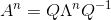

定义
我们首先来看一条公式：

这时，我们可以把λ称为矩阵A的特征值，把x称为矩阵A的特征向量。我们也可以这么说，Ax与x方向平行，而λ是x的长度伸缩大小。同时还有一点需要提起，就是λ可以为0，这时就转换成了Ax=0的问题，也就是求A的零空间了，即其零空间的向量都是λ=0时的特征向量。不过，零向量一般不考虑为特征向量，因为没意义。
比如说下图，AB=(1,1)为矩阵A的特征向量，其特征值为3。

回顾下之前的投影矩阵，如果向量b刚好处在矩阵A的列空间上，那么对于矩阵A的投影矩阵P有：Pb=b（想象平面上的线被投影多少次都是本身）。那么b就是P的特征向量，1为其特征值。
那么当向量b'正交于矩阵A的列空间，那么有：Pb'=0=0*b'。那么b'是P的特征向量，0为其特征值。
故对投影矩阵而言，其特征值为0和1。
对于特征值而言，其跟矩阵的迹和矩阵的行列式和有密切的联系，即特征值和为矩阵的迹的和，特征值的乘积为矩阵行列式的值，具体的论证过程可看番外篇 · 矩阵的迹&行列式值&特征值三者关系。
如何求解
我们可以将Ax=λx装化成(A-λI)x=0。因为x有解，所以可以得知A-λI的行列式为0，因为对于n*n的矩阵而言只有奇异矩阵其零空间才有除零向量外的值（奇异矩阵即不满秩的矩阵，其行列式为0，因为最后总可以靠消元法让最后一行全为0，而有一行0的行列式其值为0）。这时，就转为求|A-λI|=0的λ解了，当λ求出后即可代入(A-λI)x=0转而求出特征向量x的值。下面举个具体的计算例子，求矩阵A的特征向量和特征值：
首先计算|A-λI|=0的值：
得到两个λ后分别代入原式求特征向量：
这时就求出两组特征值和特征向量了：
这时，有个问题，如果特征值不同，那么其各自对应的特征向量可能存在线性相关么？
答案是否，特征值不同的特征向量线性无关。证明如下：假定有k个线性无关的特征向量与其对应的不同特征值，那么如果存在不同的特征值，其特征向量与之前k个特征向量线性相关，那么得到式子1：
将式子1两边都左乘矩阵A，根据Ax=λx可得式子2：
将式子1两边都乘以λk+1得到式子3：
将式子2减去式子3可得式子4：
结合式子4，因为已知前k个特征向量线性无关，又k+1个λ都不相同，那么只有c变量都为0时式子4才成立。而c全为0代表k+1个特征向量线性无关，所以之前的假设不成立，所以特征值不同，其特征向量线性无关！
那么问题又来了，因为λ可以重复出现，如果λ只出现一次，那么其可能存在两组线性无关的特征向量么？
答案依然是否，因为假如一个n维矩阵有n个不同的λ，那么根据刚刚推导可知这n个λ推出的特征向量线性无关，那么假如一个λ可以推出两个线性无关的特征向量，那么特征向量的维数就大于n维了，这是不可能存在的，所以总的来说，一个特征值对应一个特征向量，不过特征值可以重复出现，但每一个重复出现的特征值都只能对应一个线性无关的特征向量。
打个比方，如果我有一个3维的矩阵，其只有两个不同的特征值λ1和λ2，但λ1可以算出有两组线性无关的特征向量，这时就相当于特征值有三个——λ1,λ1,λ2，分别对应三组线性无关的特征向量。（注意，一个特征值只能有一个线性无关的特征向量，如果一个特征值推出两个，那么就追加一个同等特征值来与之对应）。
马尔科夫矩阵
各位或许会困惑为什么突然提到马尔科夫矩阵吧，因为它能用特征向量来解释。什么叫马尔科夫矩阵？其具有两个重要的性质：
1. 其内所有元素都大于等于0
2. 所有列向量自身元素和为1
举个简单的例子：
其中，可推导出两个性质：
1. 其有一个为1的特征值
2. 其他特征值的绝对值都小于1
我们先来看下如何证明第一个性质：
首先有一个马尔科夫矩阵A：
将λ=1代入|A-λI|得：
将行列式的第一行加上其余剩下的所有行，其行列式不变（根据行列式性质5）：
因为首行都为0，所以很容易知道其行列式为0（根据行列式性质6）：

所以可以得知1为矩阵A的一个特征值。
那么接下来证明性质二，其他特征值绝对值都小于1：
在证明这个问题前，先提出一个问题，如果A是马尔科夫矩阵，那么A*A是不是仍然是马尔科夫矩阵，A*A*A呢？
答案是肯定的，以A*A为例：
所以A*A的每个列向量自身和为0，且每个元素都大于0，所以A*A为马尔科夫矩阵，同理A*A*A也是，A的n次方都是马尔科夫矩阵。
回到一开始的证明，如何证明马尔科夫矩阵除了特征值为1外其余特征值绝对值都小于1。这里需要利用特征分解:

那么有(证明过程见特征分解)：

因为A的n次方是马尔科夫矩阵，所以其元素都小于等于1，如果|λ|>1，那么Λ里就有元素会无限大，这与等式不符，所以有|λ|<=1。
综上可以得到马尔科夫矩阵的4条性质：
1. 其内部全部元素都大于等于0
2. 其每列元素相加都等于1
3. 其一定有一个特征值等于1
4. 其除了等于1的特征值外其余特征值绝对值都小于1
马尔科夫矩阵应用
举一个简单的例子，假设有两个盒子A和B，其每个盒子里初始小球都为100个，每次盒子A中有20%的小球转移到盒子B中，而盒子B有40%的小球转移到盒子A中，问经过n次后，盒子A和B各剩下几个球？
我们可以先将该问题转化成马尔科夫矩阵来解决，第n次A和B的值与第n-1次有关：
先求出该马尔科夫矩阵的特征值和特征向量：
因为两个特征向量线性无关，所以我们可以将初始状态的AB用两个特征向量表示：
将马尔科夫矩阵定义为矩阵P，有：
当n趋向无穷大时，只有λ=1的那部分留下来，另一部分由于太小被舍弃，所以最终可得：
所以最终A箱子有133个小球，B箱子有67个小球，无论再进行再多少次转换都不变，这就形成一个稳态。
而马尔科夫矩阵最后都能得到一个稳态，因为其具备一个等于1的特征值以及绝对值小于1的其他特征值。那我们现在从稳态出发，已知状态n已经达到稳态了，那么继续马尔科夫过程会有什么样的结果？
这不就是求马尔科夫矩阵当λ=1时的特征向量的方程么？
所以我们很容易就能得到稳态时A，B的比例=2:1，因为总量是200，所以A剩下400/3，B剩下200/3，与之前计算出的结果一致。所以只要有一个马尔科夫矩阵，其λ=1时的特征向量的比例就是稳态时的比例。
好了，马尔科夫矩阵先介绍到这，下一节介绍特征向量的另一种应用：特征分解